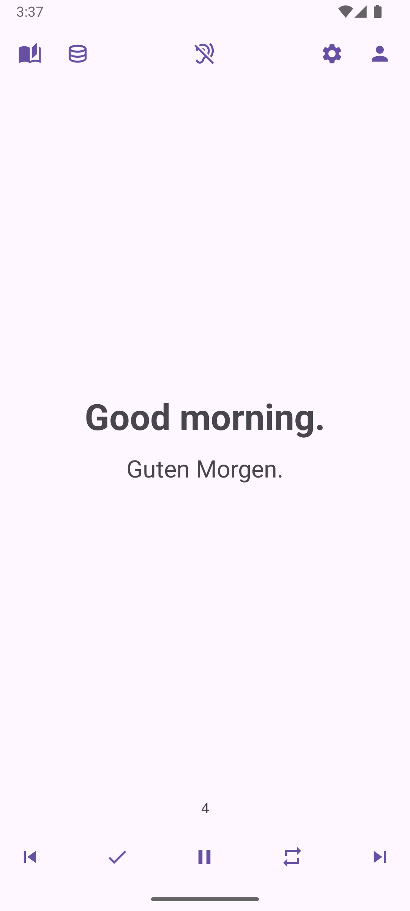

Main Screen
On the main screen, you see the list of playlists, the top menu, and — if a playlist is loaded — the player panel. There is also a button for creating a new playlist.
Main screen with playlists and player panel
Playlists
Each playlist is displayed as a card with its title, description, and available actions:
- Play
- Play from start
- Edit
- Export
- Delete
Tapping on the card itself (outside of buttons) opens the playlist editor. When playback starts, the playlist continues from the last topic where you stopped. The most recently played playlist is automatically moved to the top of the list.
Top Menu
The top menu allows you to edit the learning library, manage the database, change app settings, and view statistics. The central menu button lets you quickly enable or disable voice playback without entering settings.
Player Panel
The player panel provides standard controls:
- Play / Pause
- Next / Previous topic
- Repeat current topic
- Mark topic as learned
Learned topics are excluded from future playback across all playlists.
During Playback
When playback is active, the playlist list is replaced by a demo panel showing the current topic content: the primary and secondary text. The countdown above the player panel shows the time in seconds until the next phrase or topic.
Demo panel with topic text